타이어 공기압 경보 시스템 (TPMS)
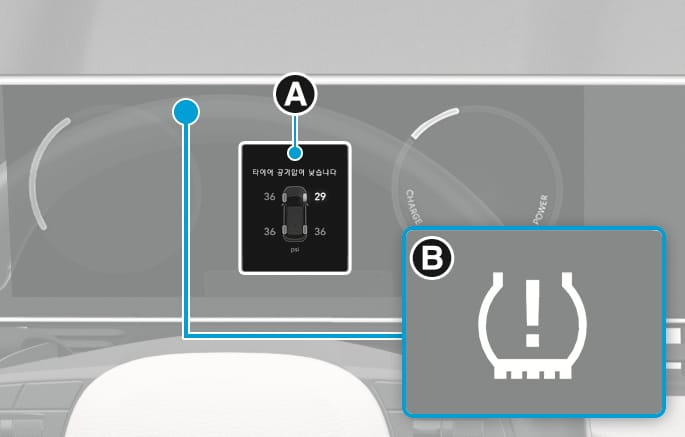
2C_TPMSInfo
- 개별 저압 타이어 위치 및 공기압 표시
- 저압 타이어 경고등(켜짐)/TPMS경고등(깜빡인 후 켜짐)
휠에 장착된 센서를 통해 타이어의 공기압을 감시하고, 공기압이 일정 기준 이하로 떨어지면 운전자에게 경고를 제공합니다.
TPMS는 Tire Pressure Monitoring System의 약자입니다.

2C_TireLowPressureInfo
스티어링 휠의 모드(
-
주행을 시작한 후 1-2분이 지나야 타이어 공기압을 확인할 수 있습니다.
-
표시되는 공기압은 압력 게이지로 측정한 공기압과 다를 수 있습니다.
-
공기압 단위를 변경하려면, 인포테인먼트 시스템에서 설정 > 일반 > 단위 설정 > 타이어 공기압 단위 > psi/kPa/bar를 선택하십시오.
-
업데이트로 인해 인포테인먼트 시스템의 상세 설정이 변경될 수 있습니다. 자세한 설정 방법은 인포테인먼트 시스템 웹 매뉴얼을 참고하십시오.
저압 타이어 감지
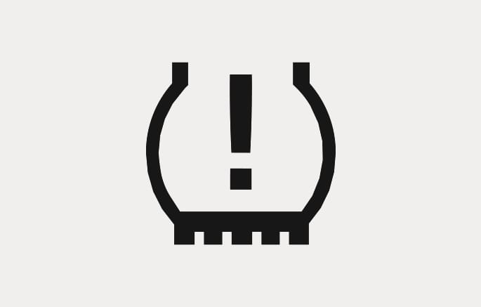
2C_TireLowPressureWarningLamp
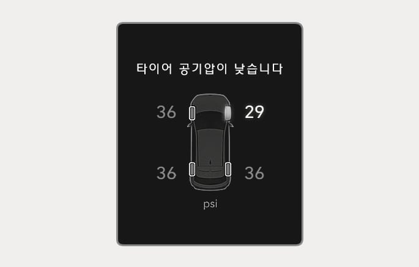
2C_TireLowPressureWarning
타이어 공기압 경보 시스템이 공기압이 현저하게 낮은 타이어를 감지하면 저압 타이어(
-
저압 타이어 경고등이 켜지면 속도를 낮추고 급격한 조향을 피하며 당사 직영 하이테크센터나 블루핸즈를 방문해 타이어 상태를 점검한 후 타이어 공기압을 조절하십시오.
-
근처에 방문할 수 있는 당사 직영 하이테크센터나 블루핸즈가 없는 경우, 타이어 응급 처치 키트(TMK)를 사용해 타이어를 보수하고 공기압을 조절하십시오('타이어 및 휠 규격'의 추천 공기압 참고).
-
주행 종료 후 3시간 이후, 또는 주행 시작 후 1.6 km 이내 주행 상태에서 타이어 공기압을 조절하십시오.
-
적정 공기압으로 조절한 후에도 기온이 낮아지면 저압 타이어 경고등이 켜질 수 있습니다. 이런 현상은 온도에 비례해 공기압이 감소하며 발생하는 것이며, 타이어 공기압 경보 시스템 기능에 이상이 있음을 의미하는 것은 아닙니다.
-
정기적으로 타이어 공기압을 점검하고, 기온이 급격히 올라가거나 내려가는 환경에서 주행해야 하는 경우, 주행 전 타이어 공기압을 점검하십시오.
-
타이어 공기압 경보 시스템에만 의존하지 말고 안전한 주행을 위해 정기적으로 타이어 공기압을 점검하고, 필요 시 당사 직영 하이테크센터나 블루핸즈를 방문해 타이어 상태를 점검한 후 타이어 공기압을 조절하십시오
-
타이어 공기압이 낮은 상태로 계속 주행하면 타이어가 과열되어 손상될 수 있으며, 타이어 수명이 단축되거나 차량의 조작 능력과 브레이크 제동력 및 연비가 감소하고 차체가 불안정해질 수 있습니다.
타이어 공기압 경보 시스템 이상
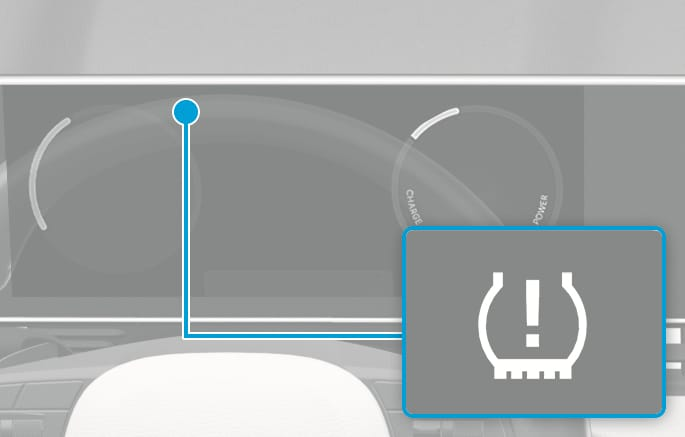
2C_TPMSWaringLampOverView_2
타이어 공기압 경보 시스템에 이상이 발생하면 TPMS 경고등이 깜빡인 후 켜집니다. 즉시 당사 직영 하이테크센터나 블루핸즈에서 차량을 점검하십시오.
-
한 개 이상의 타이어에서 저압이 감지되어 표시된 상태에서 시스템 고장 발생 시에도 경고등이 깜빡인 후 켜지며, 저압 타이어 위치 표시가 사라집니다.
-
경찰서, 관공서, 방송국, 군사 시설, 송신탑 근처를 주행할 때 전파 간섭으로 인해 TPMS 경고등이 켜질 수 있습니다.
-
타이어 체인을 장착한 경우 TPMS 경고등이 깜빡인 후 켜질 수 있습니다.
-
노트북, 스마트폰, 충전기, 오디오, 내비게이션, 원격 시동 장치, 무선 통신 장치 등 별도로 구매한 전자 기기를 차량에 장착해 사용하는 경우 TPMS 경고등이 깜빡인 후 켜질 수 있습니다.
-
타이어 공기압 감지 센서에 이상이 발생한 경우, 타이어 공기압 경보 시스템이 장착된 다른 차량 가까이 주행하면 일시적으로 TPMS 경고등이 켜지지 않을 수 있습니다.
-
실런트(봉합제)를 사용해 타이어를 수리한 경우 타이어 공기압 감지 센서와 휠에 묻은 실런트를 신속히 제거하십시오. 타이어나 센서에 묻은 이물질로 인해 TPMS 경고등이 켜질 수 있습니다. 이물질 제거 후에도 증상이 지속되는 경우 당사 직영 하이테크센터나 블루핸즈에서 차량을 점검하십시오.
타이어 공기압 감지 센서는 차량의 휠에 장착되어 있습니다.
-
예비 타이어의 휠에는 타이어 공기압 감지 센서가 장착되어 있지 않으므로, 예비 타이어를 장착하고 차량을 출발하면 10분 이내에 TPMS 경고등이 켜집니다. 당사 직영 하이테크센터나 블루핸즈에서 타이어 공기압 감지 센서가 장착된 휠로 교체하십시오.
-
타이어 공기압 감지 센서가 장착된 휠로 교체한 후 몇 분 동안 주행하면 TPMS 경고등이 꺼집니다. TPMS 경고등이 꺼지지 않으면 당사 직영 하이테크센터나 블루핸즈에서 차량을 점검하십시오.
-
타이어 공기압 감지 센서가 외부 요인으로 인한 갑작스런 타이어 손상을 즉시 감지하지는 못합니다. 주행 중 차체 불안이 감지되면 즉시 가속 페달에서 발을 떼고 안전한 장소로 천천히 이동한 후 차량을 점검하십시오.
-
못이나 도로상의 파편 등에 의한 갑작스런 타이어 손상은 타이어 공기압 경보 시스템으로 감지되지 않습니다.
-
타이어 공기압 경보 시스템의 부품을 임의로 조절하거나 교체하지 마십시오. 타이어 공기압 경보 시스템이 정상적으로 작동하지 않을 수 있습니다.
-
타이어 공기압 경보 시스템의 작동을 방해하도록 차량을 개조하거나 변형하지 마십시오.
-
공기압이 낮은 타이어를 정확히 감지하기 위해서는 각 타이어의 휠에 타이어 공기압 감지 센서가 장착되어 있어야 합니다. 센서가 예비 타이어 등 다른 위치에 장착되면 경고등이 켜질 수 있습니다.
-
타이어를 교체할 때 타이어 공기압 감지 센서의 분실 및 파손에 주의하십시오.
-
시중에서 판매하는 휠에는 타이어 공기압 감 지 센서가 없습니다. 안전을 위해 타이어 공 기압 감지 센서가 장착된 품질과 성능을 만 족하는 휠을 사용하십시오.순정부품은 품질 과 성능을 당사가 보증하는 부품입니다.
타이어 응급 처치 키트(TMK) 살펴보기
잘못된 응급 처치로 인한 안전 사고 위험을 방지하려면 다음 내용을 주의 깊게 읽고 이해한 후 타이어 응급 처치 키트(TMK)를 사용하십시오.
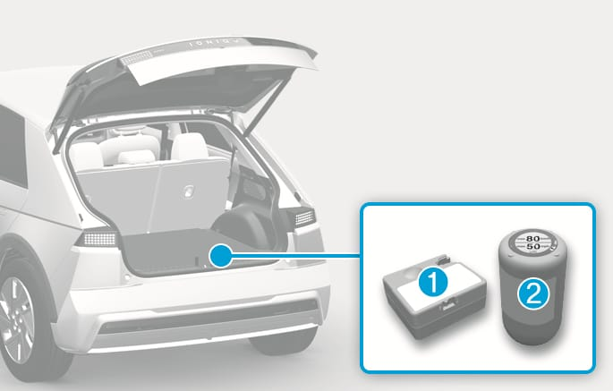
2C_TMKOverview
- 컴프레서
- 실런트(봉합제)
-
주행 중 타이어가 손상된 경우 타이어 응급 처치 키트를 사용해 수리한 후 당사 직영 하이테크센터나 블루핸즈에서 차량을 점검하십시오.
-
못이나 날카로운 물체로 인해 타이어의 트레드 부위가 손상되어 공기압이 낮아진 경우에만 타이어 응급 처치 키트(TMK)를 사용하십시오.
TMK는 Tire Mobility Kit의 약자입니다.
-
잘못된 응급 처치로 인한 안전 사고 위험을 방지하려면 다음 내용을 주의 깊게 읽고 이해한 후 타이어 응급 처치 키트(TMK)를 사용하십시오.
-
타이어 응급 처치 키트로 타이어를 임시로 수리한 후에는 80 km/h 이하 속도로 200 km 이내에 있는 당사 직영 하이테크센터나 블루핸즈를 방문해 타이어를 교체하십시오.
-
타이어 응급 처치 키트로 타이어를 수리한 후에는 비정상적이거나 갑작스런 가감속 및 방향 전환을 피하십시오. 특히, 적재 중량이 높거나 트레일러를 연결한 경우 더욱 안전에 유의하십시오.
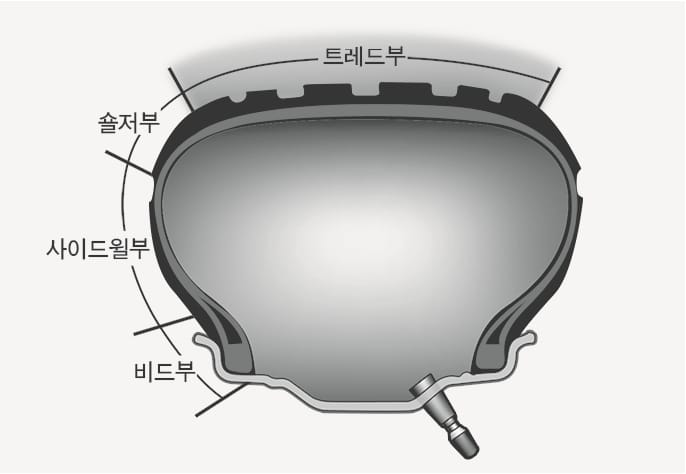
2C_TireInsideOverveiw
타이어 응급 처치 키트는 트레드부(타이어와 노면의 접촉부)의 작은 손상만 봉합할 수 있습니다.
-
타이어의 손상이 심하거나 타이어 측면이 손상된 경우에는 타이어 응급 처치 키트를 사용하지 말고 당사 직영 하이테크센터나 블루핸즈에서 차량을 점검 및 정비하십시오.
-
타이어의 손상이 심하거나 타이어 측면이 손상되었을 때 타이어 응급 처치 키트를 사용하는 경우 심각한 사고가 발생할 수 있습니다.
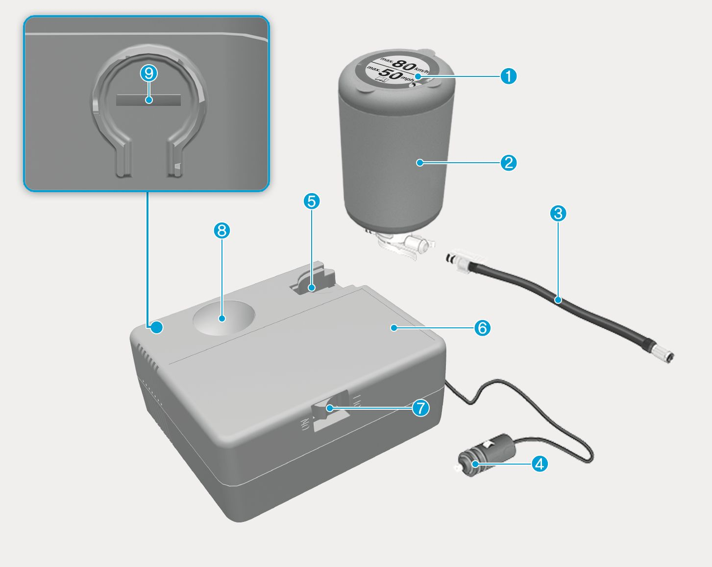
1C_TMKPartsOverview
- 속도 제한 표시 라벨
- 실런트(봉합제) 및 실런트 용기
- 주입 호스
- 다용도 소켓 연결 커넥터 및 케이블
- 실런트 용기 장착부
- 컴프레서
- 전원 스위치
- 타이어 압력 게이지
- 타이어 압력 조절 밸브
타이어 응급 처치 키트 사용 시 안전을 위한 주의사항
-
실런트는 어린이의 손에 닿지 않도록 보관하고, 실런트가 눈에 들어가거나 실수로 실런트를 먹지 않도록 주의하십시오.
-
실런트가 피부에 묻은 경우, 다량의 물로 씻으십시오. 자극이 지속되면 의사의 진찰을 받으십시오.
-
실런트가 눈에 들어간 경우, 눈꺼풀을 들어 올리고 다량의 물로 15분 이상 씻으십시오. 자극이 지속되면 의사의 진찰을 받으십시오.
-
실런트를 마신 경우, 입을 씻어내고 다량의 물을 마시십시오. 단, 환자의 의식이 없는 경우 먹을 것을 주지 말고 즉시 의사의 진찰을 받도록 하십시오.
-
실런트에 장시간 노출되는 경우, 신장 등 신체 기관이 손상될 수 있습니다.
-
도로를 피해 안전한 장소에서 사용하십시오.
-
도로에서 타이어를 수리해야 하는 경우, 접근하는 운전자가 주의할 수 있도록 고장 자동차 표지판(안전삼각대)을 설치하십시오.
-
바닥이 단단하고 평탄한 장소에서 주차 브레이크를 체결해 차량이 움직이지 않도록 한 후 사용하십시오.
-
지정된 차량에만 사용하십시오. 자전거 타이어나 모터 사이클 타이어 등 유형이 다른 타이어에는 사용하지 마십시오.
-
못이나 나사 등 날카로운 이물질이 타이어에 박힌 경우, 이물질을 임의로 제거하려 하지 말고 당사 직영 하이테크센터나 블루핸즈에서 차량을 점검 및 정비하십시오. 이물질 제거에 실패하는 경우 이물질이 타이어 내부로 들어갈 수 있습니다.
-
실런트 용기 위에 수록된 설명서를 숙지한 후 타이어 응급 처치 키트를 사용하십시오.
-
차량의 시동을 건 상태로 컴프레서를 사용하십시오. 컴프레서 사용 중 차량의 배터리가 방전될 수 있습니다.
-
타이어를 수리한 후 타이어 응급 처치 키트를 버리지 마십시오.
-
컴프레서를 10분 이상 작동하지 마십시오. 컴프레서가 과열되거나 손상될 수 있습니다.
-
주변 기온이 -30 °C 이하일 때는 타이어 응급 처치 키트를 사용하지 마십시오.
-
유효기간이 지난 실런트는 사용하지 마십시오. 새 실런트를 구매해 사용하십시오.
타이어 응급 키트 사용하기
-
타이어 응급 처치 키트를 사용하기 전에 컴프레서에 부착된 설명서를 주의 깊게 읽으십시오.
-
속도 제한 표시 라벨을 컴프레서에서 떼어내어 잘 보이는 곳에 부착하고 주행 중 제한 속도를 준수하십시오.
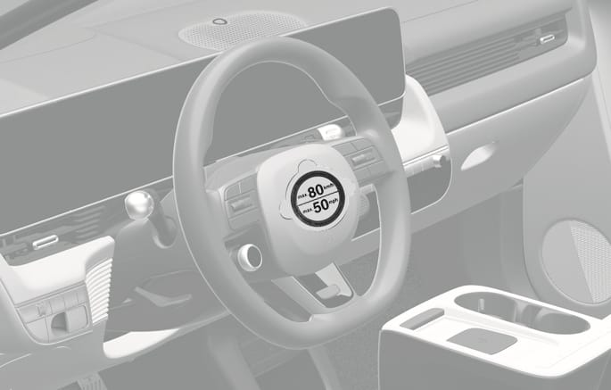
2C_HowToUseTMK
타이어 공기압만 조절하려면 '타이어 공기압 경보 시스템 (TPMS)'를 참고하십시오.
타이어 응급 키트 사용 시 다음 지시를 정확하게 따르십시오.
-
실런트 용기를 흔들어 내용물이 잘 혼합되도록 하십시오.
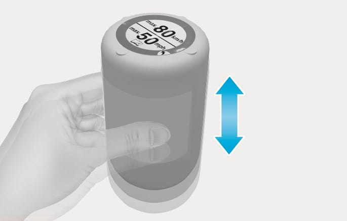
2C_TMKProcedure
-
주입 호스(3)를 (A)방향으로 용기(2)에 연결하고, 실런트(봉합제) 용기(2)를 (B)방향으로 실런트 용기 장착부(5)에 연결하여 고정하십시오.
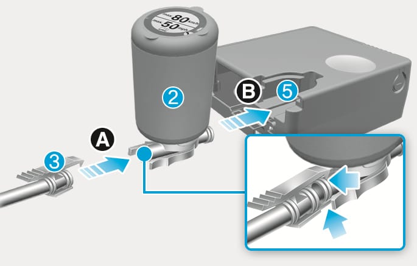
2C_TMKProcedure_2
-
손상된 타이어의 휠 공기 주입구 캡을 열고실런트(봉합제)에 연결된 주입 호스(3)를 휠공기 주입구에 연결하여 고정하십시오.
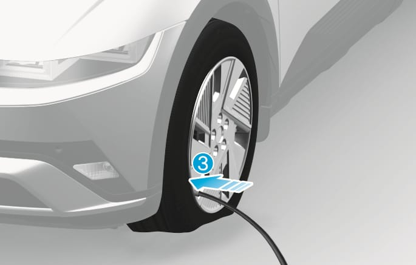
2C_TMKProcedure_3
공기 주입구와 주입 호스의 연결 상태를 확인하십시오. 호스가 정상적으로 연결되어 있지 않으면 실런트 주입 시 역류해 공기 주입구가 막힐 수 있습니다.
-
컴프레서의 전원이 꺼져 있는지 확인한 후 다용도 소켓 연결 커넥터 및 케이블(4)을 차량의 다용도 소켓에 연결하십시오.
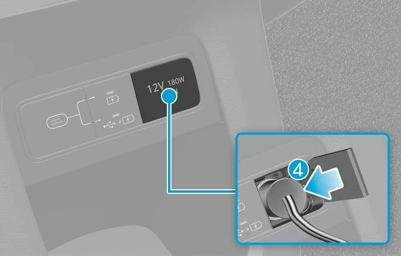
2C_TMKProcedure_4
다른 차량의 타이어 응급처치 키트를 다용도 소켓에 연결하지 마십시오. 전류 용량의 차이로 인해 화재가 발생할 수 있습니다.
-
차량의 시동을 거십시오.
-
컴프레서를 켜고 타이어 공기압이 적정 수준이 될 때까지 5-7분 동안 실런트를 주입하십시오.
타이어 공기압이 29 psi(200 kpa) 이하인 경우 차량을 주행하지 마십시오.
-
'타이어 및 휠 규격'에 수록된 적정 공기압 또는 운전석 B 필라에 부착된 타이어 공기압 라벨을 참고하십시오('타이어 공기압' 참고).
-
실런트 주입 후 타이어 공기압을 다시 확인해 조절하십시오.
-
사용한 타이어 응급처치 키트(TMK)는 실런트 용기와 컴프레서가 조립된 상태로 차량 내 보관 위치에 두십시오.
-
-
컴프레서를 끄고 주입 호스를 타이어에서 분리하십시오.
-
실런트 주입 후, 즉시 20 km/h 이상의 속도로 7-10 km 거리를 10분 정도 주행하십시오.
실런트를 주입한 후 차량을 주행하면 타이어 내부에 실런트가 도포됩니다. 도포된 실런트는 주행 중 발생하는 타이어의 진동과 미세한 발열을 이용해 손상 부위를 막고 타이어 공기압을 유지합니다.
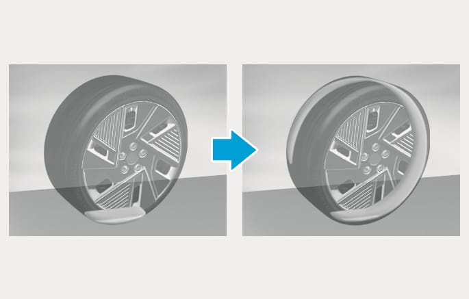
2C_TMKPrecedure_5
-
실런트를 사용해 손상된 타이어를 수리한 경우, 안전을 위해 80 km/h 이하로 주행하십시오.
-
주행 중 이상 진동 또는 소음이 발생하거나 타이어의 주행 느낌이 거친 경우, 속도를 줄이고 안전한 곳에 주차한 후 당사 직영 하이테크센터나 블루핸즈로 차량을 견인해 점검하십시오.
-
-
타이어 공기압을 확인한 후 적정 압력으로 조정하십시오('타이어 공기압 경보 시스템 (TPMS)' 참고).
-
컴프레서를 10분 이상 계속해서 작동하지 마십시오. 컴프레서가 과열되거나 손상될 수 있습니다.
-
공기압이 일정하게 유지되지 않는 경우, 다시 한 번 20 km/h 이상의 속도로 7-10 km 또는 10분 정도 주행한 후 타이어 압력을 조절하십시오.
-
타이어 손상부 지름이 4 mm 이상인 경우, 타이어 응급 처치 키트로 수리할 수 없습니다. 당사 직영 하이테크센터나 블루핸즈에서 타이어를 점검한 후 수리 또는 교체하십시오.
-
적정 타이어 공기압이 유지되지 않는 경우 주행을 멈추고 차량을 견인해 당사 직영 하이테크센터나 블루핸즈에서 정비하십시오.
-
타이어 공기압 조절하기
-
차량을 안전한 장소에 주차하십시오.
-
컴프레서의 주입 호스(3)를 타이어 휠 공기 주입구에 직접 연결하십시오.
-
공기압만 조절하는 경우, 컴프레서에 실런트를 연결하지 마십시오.
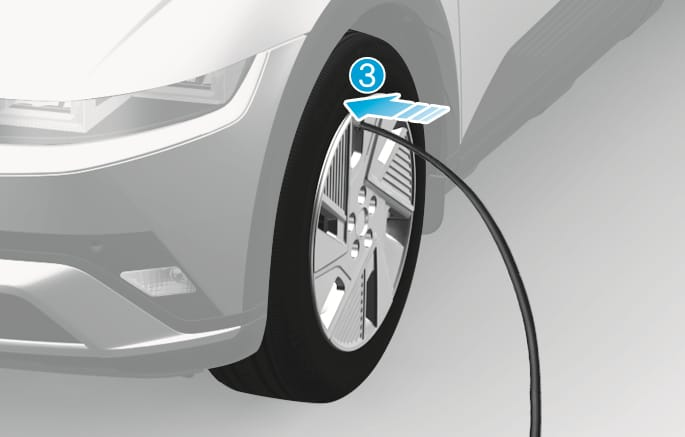
2C_TMKProcedure_6
타이어 공기압이 29 psi(200 kpa) 이하인 경우 차량을 주행하지 마십시오.
-
'타이어 및 휠 규격'에 수록된 적정 공기압 또는 운전석 B 필라에 부착된 타이어 공기압 라벨을 참고하십시오('타이어 공기압' 참고).
-
-
다용도 소켓 연결 커넥터를 차량의 다용도 소켓에 연결하십시오.
-
차량의 시동을 걸고 타이어 공기압을 적정 수준으로 조절하십시오.
-
공기압이 낮은 경우 컴프레서 전원을 켜고 규정 공기압이 될 때까지 공기를 보충하십시오.
-
공기압이 높은 경우 타이어 압력 조절 밸브를 사용해 공기를 빼십시오.
-
현재 타이어 공기압을 확인하려면, 전원 스위치를 눌러 컴프레서 전원을 끄십시오.
-
-
품질이나 성능이 부적합한 타이어 응급 처치 키트(실런트(봉합제)포함)를 사용하지 마십시오. 품질이나 성능이 부적합한 실런트(봉합제)가 타이어 공기압 감지센서 고장을 유발할 수 있습니다. 순정부품 실런트(봉합제)는 품질과 성능을 당사가 보증하는 부품입니다.
-
실런트(봉합제)를 사용해 타이어를 수리한 경우 타이어 공기압 감지 센서와 휠에 묻은 실런트를 신속히 제거하십시오. 타이어나 센서에 묻은 이물질로 인해 TPMS 경고등이 켜질 수 있습니다. 이물질 제거 후에도 증상이 지속되는 경우 당사 직영 하이테크센터나 블루핸즈에서 차량을 점검하십시오.
-
타이어 또는 휠을 수리한 후 재장착할 때 휠 너트의 규정 토크를 준수하십시오(11-13 kgf.m).
-
사용한 실런트 용기와 주입 호스는 다시 사용할 수 없습니다. 남은 실런트(봉합제)는 당사 직영 하이테크센터에 요청하여 폐기하고, 빈 실런트(봉합제) 용기는 가정에서 폐기물로 배출하십시오.
실런트 및 예비 부품은 당사 직영 하이테크센터에서 구매할 수 있습니다.